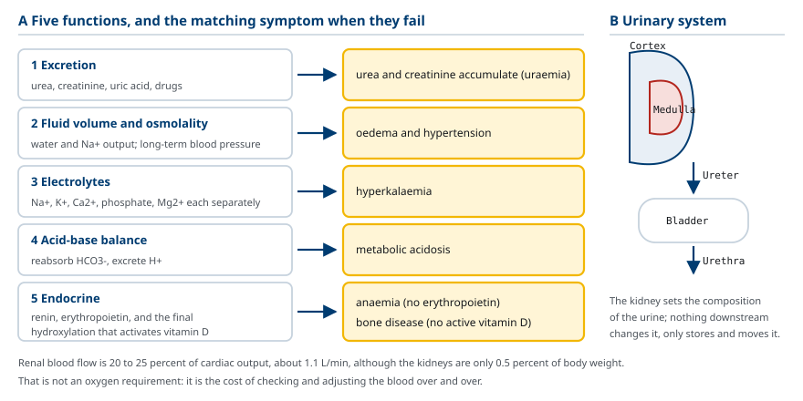
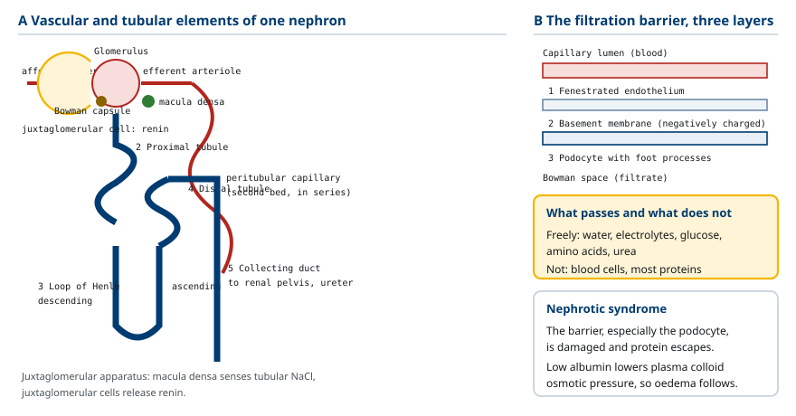
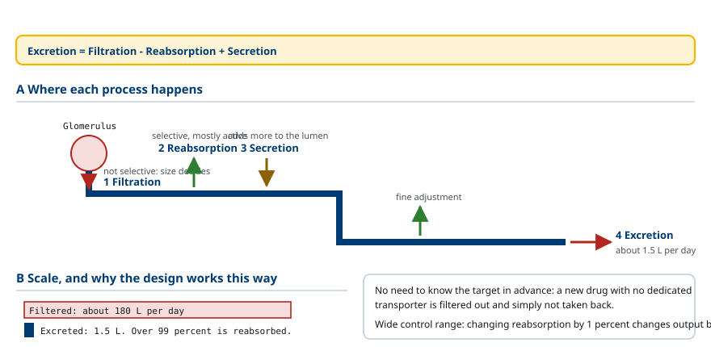
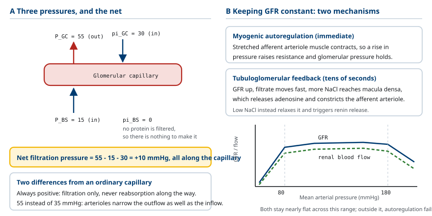
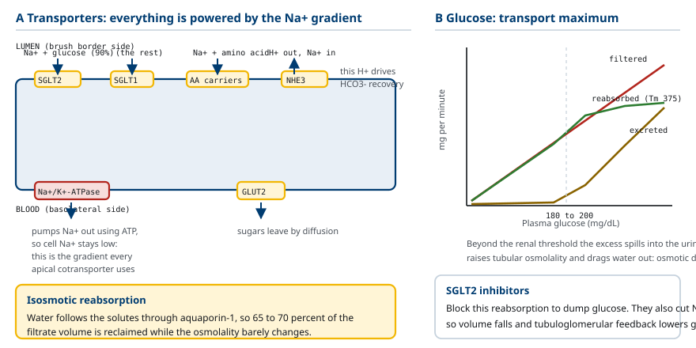
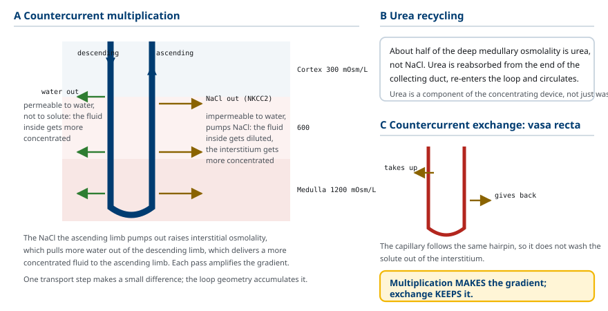
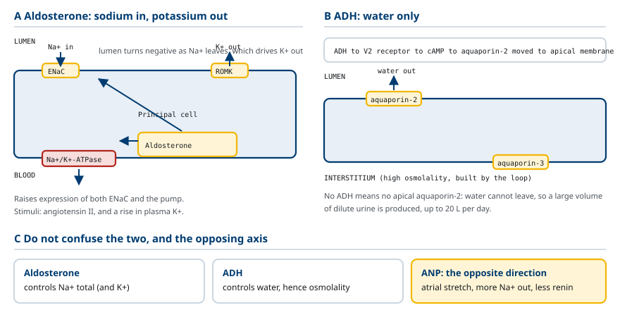
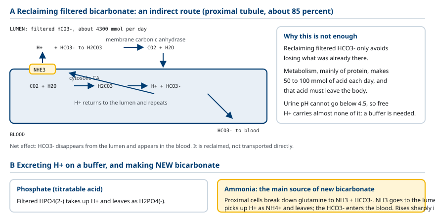
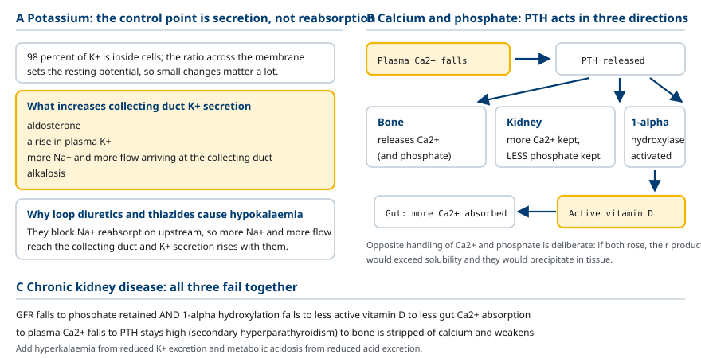

M01-W02-L01 · 인체일반생물학과 기초세포생물학
신장·비뇨계 요약: 배설·체액·전해질 조절
The Kidney and Urinary System: Excretion, Body Fluid and Electrolyte Control
학습목표
- 신장의 기능을 배설 외의 범주까지 포함해 다섯 가지로 정리하고 각 범주의 대표 사례를 든다.
- Nephron의 구조를 혈관 요소와 세뇨관 요소로 나누어 그리고 각 구간의 이름을 순서대로 쓴다.
- 소변 생성을 여과·재흡수·분비·배설의 네 과정으로 정의하고 이들을 하나의 식으로 묶어 쓴다.
- 사구체 여과를 일으키는 세 가지 압력을 쓰고 순 여과압을 계산하며 모세혈관 교환과의 차이를 설명한다.
- 사구체여과율의 정상값을 쓰고 자가조절과 세뇨관사구체 되먹임이 이를 유지하는 기전을 설명한다.
- 근위세뇨관에서 일어나는 재흡수를 수송체 수준에서 설명하고 포도당 재흡수의 최대 용량과 그 임상적 의미를 쓴다.
- Loop of Henle의 역류 증폭 기전을 설명하고 농축된 소변을 만들기 위해 왜 삼투압 기울기가 필요한지 쓴다.
- 원위세뇨관과 집합관에서 aldosterone과 ADH가 작용하는 지점을 구분하고 각 호르몬이 조절하는 대상을 쓴다.
- 신장이 산–염기 평형에 관여하는 두 방식을 설명하고 호흡계의 보상과 시간 규모를 비교한다.
- 칼륨, 칼슘, 인의 조절에 신장이 관여하는 방식을 각각의 호르몬과 함께 쓴다.
선수지식
- M01-W01-L01 순환계 요약 — 모세혈관 교환, Starling 힘, RAAS, 혈압 조절
- M01-W01-L02 호흡계 요약 — Henderson–Hasselbalch 식, 산–염기 장애의 네 분류
- 삼투압과 능동수송의 기본 개념
강의 구성
- 1. 신장이 해결하는 문제와 다섯 가지 기능
- 2. Nephron의 구조
- 3. 소변 생성의 네 과정
- 4. 사구체 여과와 여과율
- 5. 근위세뇨관: 재흡수의 대부분
- 6. Loop of Henle와 소변 농축
- 7. 원위세뇨관과 집합관: 호르몬에 의한 미세 조정
- 8. 신장과 산–염기 평형
- 9. 칼륨, 칼슘, 인의 조절
- 10. 체액 구획과 삼투압 조절 — 물과 소금을 따로 보는 법
- 11. 신장 기능을 측정하는 법
- 12. 신장의 내분비 기능과 만성 신질환
- 13. 신장 질환을 읽는 기본 논리
1. 신장이 해결하는 문제와 다섯 가지 기능
신장을 배설 기관으로만 보는 것은 지나치게 좁은 관점이다. 신장이 실제로 하는 일은 혈액의 조성을 원하는 값으로 유지하는 것이고, 폐기물 배출은 그 일의 한 측면이다.
이 관점의 근거는 신장을 거치는 혈류량에서 나온다. 심박출량의 약 20~25%, 분당 약 1.1 L의 혈액이 신장을 지난다. 신장의 무게가 체중의 0.5%에 불과한데도 혈류의 4분의 1을 받는다는 사실은, 신장이 산소를 많이 쓰기 때문이 아니라 혈액을 반복해서 검사하고 조정하기 때문이다.
신장의 기능은 다섯 범주로 정리된다.
- 배설(excretion): 대사의 최종 산물과 외래 물질을 소변으로 내보낸다. 요소(단백질 대사의 질소 산물), creatinine(근육 대사의 산물), 요산(핵산 대사의 산물), 약물과 그 대사물이 여기 해당한다.
- 체액량과 삼투압 조절: 물과 Na⁺의 배출량을 조절해 혈액량과 혈장 삼투압을 일정하게 유지한다. 앞 수업에서 본 대로 장기적인 혈압 조절의 책임이 여기에 있다.
- 전해질 조절: Na⁺, K⁺, Ca²⁺, PO₄³⁻, Mg²⁺의 농도를 각각 독립적으로 조절한다.
- 산–염기 평형: HCO₃⁻을 재흡수하고 H⁺을 배출해 혈액의 pH를 유지한다.
- 내분비 기능: 세 가지 호르몬 활동에 관여한다. Renin을 분비해 RAAS를 시작하고, erythropoietin을 분비해 적혈구 생성을 자극하고, vitamin D를 활성형인 1,25-dihydroxyvitamin D로 바꾸는 마지막 hydroxylation을 수행한다.
이 다섯 범주를 함께 보아야 신부전의 증상 목록이 이해된다. 신부전 환자에게 요소와 creatinine이 쌓이는 것(배설), 부종과 고혈압이 생기는 것(체액량), 고칼륨혈증이 오는 것(전해질), 대사성 산증이 생기는 것(산–염기), 빈혈이 오는 것(erythropoietin), 뼈가 약해지는 것(vitamin D)이 모두 같은 목록의 항목들이다.
비뇨계의 구조는 신장 두 개, 각 신장에서 나오는 ureter, 소변을 모아 두는 bladder, 밖으로 내보내는 urethra로 이루어진다. 신장이 소변의 조성을 결정하고, 나머지는 운반과 저장을 담당한다. 신장을 떠난 뒤에는 소변의 조성이 바뀌지 않는다.

2. Nephron의 구조
신장의 기능 단위가 nephron이며, 한쪽 신장에 약 100만 개가 있다. Nephron은 혈관 요소와 세뇨관 요소가 짝지어 하나의 단위를 이루는 구조이고, 두 요소를 나란히 놓고 보아야 기능이 이해된다.
혈관 요소의 순서는 다음과 같다. Renal artery → afferent arteriole → glomerulus(모세혈관 덩어리) → efferent arteriole → peritubular capillary(세뇨관 주위 모세혈관) → renal vein. 여기서 특이한 점은 모세혈관이 두 번 나온다는 것이다. 보통의 기관에서는 모세혈관이 한 번 나오고 바로 정맥으로 가는데, 신장에서는 glomerulus를 지난 혈액이 다시 arteriole을 거쳐 두 번째 모세혈관으로 들어간다. 이 직렬 배치가 신장 기능의 핵심이다. 첫 번째 모세혈관에서 액체를 걸러내고, 두 번째 모세혈관에서 필요한 것을 거두어들인다.
세뇨관 요소의 순서는 다음과 같다.
1. Bowman's capsule: Glomerulus를 둘러싼 주머니로 여과액을 받는다. 2. 근위세뇨관(proximal tubule): 재흡수의 대부분이 여기서 일어난다. 3. Loop of Henle: 겉질에서 속질로 내려가는 하행지와 다시 올라오는 상행지로 이루어진다. 삼투압 기울기를 만든다. 4. 원위세뇨관(distal tubule): 미세 조정이 시작된다. 5. 집합관(collecting duct): 여러 nephron이 합류하며, 최종 농도 조절이 일어난다. 이후 renal pelvis를 거쳐 ureter로 나간다.
여과 장벽의 구조도 보아야 한다. Glomerulus의 모세혈관과 Bowman 공간 사이에는 세 층이 있다. 구멍이 난 내피세포(fenestrated endothelium), 기저막(basement membrane), 그리고 발 모양 돌기를 가진 podocyte다. 이 세 층이 함께 여과의 선택성을 만든다. 물, 전해질, 포도당, 아미노산, 요소는 자유롭게 통과하고, 혈구와 대부분의 단백질은 통과하지 못한다. 분자 크기와 전하가 둘 다 작용하며, 기저막의 음전하가 albumin 같은 음전하 단백질을 밀어낸다.
Afferent arteriole과 원위세뇨관이 만나는 지점에 특수 구조가 있다. 세뇨관 쪽의 macula densa 세포가 세뇨관 안의 NaCl 농도를 감지하고, 혈관 쪽의 juxtaglomerular cell이 renin을 분비한다. 두 세포가 맞닿아 있는 이 구조를 juxtaglomerular apparatus라 하며, 뒤에서 다룰 되먹임 조절의 자리다.

3. 소변 생성의 네 과정
소변은 혈액에서 만들어지며, 네 과정의 결과다.
- 여과(filtration): Glomerulus에서 혈액의 액체 성분이 Bowman 공간으로 밀려 나간다. 선택적이지 않다. 크기 조건만 맞으면 다 나간다.
- 재흡수(reabsorption): 세뇨관에서 필요한 물질이 혈액으로 되돌아간다. 선택적이고 대부분 능동적이다.
- 분비(secretion): 혈액에서 세뇨관으로 물질이 추가로 들어간다. 여과만으로 충분히 제거되지 않는 물질을 더 빼내는 경로다.
- 배설(excretion): 최종적으로 소변으로 나간다.
네 과정의 관계는 하나의 식으로 묶인다.
배설량 = 여과량 − 재흡수량 + 분비량
이 식이 신장 생리의 뼈대다. 어떤 물질의 배설량을 묻는 질문은 모두 이 세 항 가운데 무엇이 어떻게 바뀌었는지를 묻는 질문으로 환원된다.
규모를 숫자로 보면 신장이 무엇을 하는지가 분명해진다. 하루에 여과되는 액체는 약 180 L다. 혈장 전체가 약 3 L이므로 혈장이 하루에 약 60번 걸러진다는 뜻이다. 그런데 하루 소변량은 약 1.5 L다. 즉 여과액의 99% 이상이 재흡수된다.
이 설계는 비효율적으로 보인다. 왜 필요한 것만 골라 내보내지 않고, 다 걸러낸 뒤 거의 다 되돌리는가. 두 가지 이점이 있다.
첫째, 배출 대상을 미리 알 필요가 없다. 몸이 처음 만나는 약물이나 독성 물질에 대해 전용 수송체를 가지고 있지 않아도, 일단 걸러내고 필요한 것만 되돌리면 나머지는 자동으로 배출된다. 선택적 배출 방식이라면 모든 물질에 대해 전용 배출 장치를 갖추어야 한다.
둘째, 조절의 폭이 커진다. 재흡수율을 1%만 바꾸어도 배설량이 180 L의 1%, 즉 1.8 L만큼 바뀐다. 하루 소변량이 1.5 L인 체계에서 이는 매우 큰 조절 폭이다. 체액량을 빠르게 조정할 수 있는 근거가 여기에 있다.
몇 가지 물질의 처리 양상을 비교하면 네 과정의 조합이 보인다.
| 물질 | 여과 | 재흡수 | 분비 | 결과 |
|---|---|---|---|---|
| 포도당 | 자유롭게 | 거의 100% | 없음 | 정상 소변에 없음 |
| 아미노산 | 자유롭게 | 거의 100% | 없음 | 정상 소변에 없음 |
| Na⁺ | 자유롭게 | 약 99% | 없음 | 조절 대상 |
| 요소 | 자유롭게 | 약 50% | 없음 | 절반 배설 |
| Creatinine | 자유롭게 | 없음 | 매우 적음 | 거의 전부 배설 |
| K⁺ | 자유롭게 | 근위에서 재흡수 | 집합관에서 분비 | 분비가 조절 대상 |
| H⁺ | 적음 | — | 많음 | 분비가 주 경로 |
| Albumin | 거의 안 됨 | — | — | 정상 소변에 없음 |
Creatinine이 여과되고 재흡수되지 않으며 분비도 거의 없다는 점이 중요하다. 이 성질 때문에 creatinine의 배설량이 여과량과 거의 같고, 혈중 creatinine 농도로 사구체여과율을 추정할 수 있다.

4. 사구체 여과와 여과율
여과를 일으키는 힘은 앞 수업에서 본 Starling 힘과 같은 종류이지만, glomerulus에서는 세 가지만 작용한다.
- 사구체 모세혈관 정수압(P_GC): 약 55 mmHg. 밖으로 밀어낸다.
- Bowman 공간 정수압(P_BS): 약 15 mmHg. 안으로 밀어 넣는다.
- 사구체 모세혈관 교질삼투압(π_GC): 약 30 mmHg. 안으로 끌어당긴다.
네 번째 힘인 Bowman 공간의 교질삼투압은 0이다. 단백질이 여과되지 않으므로 Bowman 공간에 교질삼투압을 만들 단백질이 없기 때문이다. 일반 모세혈관에서는 이 값이 약 3 mmHg였다.
순 여과압 = 55 − 15 − 30 = +10 mmHg
중요한 차이가 두 가지 있다. 첫째, 순 여과압이 항상 양수다. 일반 모세혈관에서는 시작부에서 여과하고 끝부분에서 재흡수했지만, glomerulus에서는 처음부터 끝까지 여과만 일어난다. 둘째, 사구체 모세혈관의 정수압이 55 mmHg로 매우 높다. 일반 모세혈관의 35 mmHg보다 훨씬 높고, 그 이유는 glomerulus가 afferent arteriole과 efferent arteriole 사이에 끼어 있어 유출 쪽에도 저항이 있기 때문이다. 한쪽만 좁은 보통의 모세혈관과 달리 양쪽이 좁으므로 안쪽 압력이 높게 유지된다.
사구체여과율(glomerular filtration rate, GFR) 은 양쪽 신장의 모든 glomerulus에서 단위 시간에 만들어지는 여과액의 양이며, 정상값은 약 125 mL/분, 하루 약 180 L다. GFR은 신기능을 평가하는 가장 중요한 지표다.
GFR을 유지해야 하는 이유는 분명하다. GFR이 떨어지면 폐기물이 쌓이고, GFR이 올라가면 재흡수 능력을 넘어서는 양이 세뇨관으로 밀려와 필요한 물질까지 잃는다. 그런데 혈압은 하루 동안 크게 변한다. 따라서 혈압이 변해도 GFR을 일정하게 유지하는 장치가 필요하며, 두 가지가 작동한다.
자가조절(myogenic autoregulation). Afferent arteriole의 smooth muscle은 늘어나면 수축하는 성질이 있다. 혈압이 올라가 혈관이 늘어나면 수축해 저항을 올리므로 들어오는 혈류가 줄어 사구체 압력이 유지된다. 혈압이 떨어지면 반대로 이완한다. 이 기전만으로 평균 동맥압 80~180 mmHg 범위에서 GFR이 거의 일정하게 유지된다.
세뇨관사구체 되먹임(tubuloglomerular feedback). 원위세뇨관의 macula densa가 세뇨관 안의 NaCl 농도를 감지한다. GFR이 올라가면 여과액이 빠르게 지나가 재흡수될 시간이 줄고, macula densa에 도달하는 NaCl이 많아진다. Macula densa는 이를 감지해 adenosine을 내보내 afferent arteriole을 수축시키고, GFR을 낮춘다. 반대로 NaCl이 적게 도달하면 afferent arteriole이 이완하고 juxtaglomerular cell이 renin을 분비한다.
두 기전의 차이에 주의해야 한다. 자가조절은 압력을 감지하는 혈관 자체의 성질이고, 세뇨관사구체 되먹임은 세뇨관 안의 조성을 감지하는 신호 전달이다. 전자는 즉시, 후자는 수십 초 내에 작동한다.

5. 근위세뇨관: 재흡수의 대부분
여과액의 약 65~70%가 근위세뇨관에서 재흡수된다. 이 구간의 특징은 대량으로, 선택성은 낮게 재흡수한다는 점이다. 미세 조정은 뒤쪽 구간이 담당한다.
근위세뇨관 상피세포의 구조가 이 기능에 맞춰져 있다. Lumen 쪽에 미세융모가 빽빽해(brush border) 표면적이 크고, 미토콘드리아가 풍부해 능동수송에 필요한 ATP를 공급한다. 소장 상피와 구조가 닮아 있는 것은 하는 일이 같기 때문이다.
재흡수의 동력은 거의 모두 Na⁺의 농도기울기에서 나온다. 세포의 혈액 쪽 막에 있는 Na⁺/K⁺-ATPase가 ATP를 써서 Na⁺을 혈액으로 퍼내면, 세포 안의 Na⁺ 농도가 낮아진다. 그러면 lumen의 Na⁺이 세포 안으로 들어오려 하고, 이 흐름에 다른 물질을 얹어 함께 들여온다. 이것이 2차 능동수송이다.
Lumen 쪽 막에서 Na⁺과 함께 들어오는 것들은 다음과 같다.
- 포도당: SGLT2가 대부분(약 90%), SGLT1이 나머지를 담당한다.
- 아미노산: 성질별로 여러 공동수송체가 담당한다.
- 인산, 젖산, citrate: 각각의 공동수송체가 있다.
Na⁺과 반대 방향으로 교환되는 것도 있다. Na⁺/H⁺ 교환체(NHE3) 가 Na⁺을 들이면서 H⁺을 lumen으로 내보내며, 이 H⁺이 뒤에서 다룰 HCO₃⁻ 재흡수의 수단이 된다.
물은 능동수송되지 않는다. 용질이 재흡수되면 세포 사이와 간질의 삼투압이 올라가고, 물이 그 기울기를 따라 이동한다. 근위세뇨관 상피는 물이 잘 통과하므로(aquaporin-1이 항상 있다) 용질 재흡수와 물 재흡수가 거의 같은 비율로 일어난다. 그 결과 근위세뇨관을 지나는 동안 여과액의 양은 크게 줄지만 삼투압은 거의 변하지 않는다(등삼투압 재흡수).
포도당 재흡수의 최대 용량은 따로 다룰 만한 주제다. SGLT2와 SGLT1의 개수가 유한하므로 재흡수할 수 있는 포도당의 양에 상한이 있다. 이 상한을 transport maximum(Tm)이라 하며, 분당 약 375 mg이다. 혈당이 정상일 때 여과되는 포도당은 분당 약 125 mg이므로 여유가 충분하고, 소변에 포도당이 나오지 않는다.
혈당이 올라가 여과량이 Tm을 넘으면 넘친 만큼이 소변으로 나간다. 이 지점의 혈당을 신장 역치(renal threshold) 라 하며, 약 180~200 mg/dL다. 당뇨병 환자의 소변에 당이 나오는 이유, 그리고 소변량이 늘어나는 이유가 여기서 설명된다. 재흡수되지 않은 포도당이 세뇨관 안의 삼투압을 올려 물이 따라 나가기 때문이며, 이를 삼투성 다뇨(osmotic diuresis)라 한다.

6. Loop of Henle와 소변 농축
사람이 농축된 소변을 만들 수 있다는 사실은 생존에 직결된다. 물이 부족할 때 폐기물을 적은 물에 담아 내보낼 수 있어야 하기 때문이다. 사람의 소변은 혈장(약 300 mOsm/L)보다 네 배 진한 약 1200 mOsm/L까지 농축될 수 있다.
농축을 가능하게 하려면 두 가지가 필요하다. 첫째, 집합관 주위의 간질에 높은 삼투압 기울기가 있어야 한다. 그래야 집합관 안의 물이 밖으로 끌려 나갈 수 있다. 둘째, 집합관 벽이 물을 통과시킬 수 있어야 한다. 이 두 조건을 각각 Loop of Henle와 ADH가 담당한다.
Loop of Henle가 삼투압 기울기를 만드는 방식이 역류 증폭(countercurrent multiplication) 이다. 핵심은 하행지와 상행지의 성질이 반대라는 데 있다.
- 하행지(descending limb): 물은 잘 통과시키지만 용질은 거의 통과시키지 않는다. 주위 간질의 삼투압이 높으므로 물이 밖으로 나가고, 안의 액체는 점점 진해진다.
- 상행지(ascending limb): 물은 거의 통과시키지 않고, 두꺼운 부분에서 NaCl을 능동적으로 퍼낸다. 수송체는 NKCC2(Na⁺-K⁺-2Cl⁻ 공동수송체)다. 물은 못 나가고 용질만 나가므로, 안의 액체는 점점 묽어진다.
이 두 작용이 짝지어 작동하면 어떻게 되는가. 상행지가 퍼낸 NaCl이 간질의 삼투압을 올리고, 올라간 간질 삼투압이 하행지의 물을 더 끌어낸다. 하행지의 액체가 더 진해진 상태로 loop를 돌아 상행지로 들어오면, 상행지는 더 진한 액체에서 NaCl을 퍼내 간질을 더 진하게 만든다. 이 되먹임이 반복되면서 기울기가 증폭된다. 한 번의 수송이 만들 수 있는 차이는 작지만, loop의 모양과 흐름의 방향이 그 작은 차이를 축적한다.
결과적으로 겉질과 속질 사이에 삼투압 기울기가 생긴다. 겉질 쪽 간질은 약 300 mOsm/L, 속질 깊은 쪽은 약 1200 mOsm/L다. Loop가 긴 nephron이 많을수록 더 깊은 기울기를 만들 수 있고, 사막에 사는 동물에서 loop가 특히 길다.
요소의 역할도 함께 보아야 한다. 속질 간질 삼투압의 상당 부분(약 절반)은 NaCl이 아니라 요소가 만든다. 집합관의 끝부분에서 요소가 간질로 재흡수되고, 이 요소가 다시 loop로 들어가 순환하면서(요소 재순환) 속질의 삼투압을 유지한다. 요소가 단순한 폐기물이 아니라 농축 장치의 부품이라는 점이 중요하다.
마지막으로 역류 교환(countercurrent exchange) 이 기울기를 보호한다. 속질을 지나는 모세혈관(vasa recta)도 loop와 같은 모양으로 내려갔다 올라오며, 내려갈 때 용질을 받고 올라올 때 내주므로 간질의 용질을 씻어 가지 않는다. 이름이 비슷하지만 역류 증폭은 기울기를 만드는 기전이고, 역류 교환은 기울기를 유지하는 기전이다.

7. 원위세뇨관과 집합관: 호르몬에 의한 미세 조정
근위세뇨관과 loop가 대량 처리를 담당했다면, 원위세뇨관과 집합관은 호르몬의 지시에 따라 최종값을 맞춘다. 여기서 재흡수되는 양은 전체의 일부에 불과하지만, 조절되는 양이기 때문에 생리적 의미가 크다.
Aldosterone: Na⁺과 K⁺을 조절한다. 부신 겉질에서 분비되며, 분비 자극은 angiotensin II와 혈중 K⁺ 농도 상승이다. 집합관의 principal cell에 작용해 두 가지 단백질의 발현을 늘린다. Lumen 쪽 막의 ENaC(epithelial Na⁺ channel)과 혈액 쪽 막의 Na⁺/K⁺-ATPase다. 그 결과 Na⁺ 재흡수가 늘고, Na⁺이 들어온 만큼 lumen이 음전하를 띠게 되어 K⁺이 lumen으로 빠져나간다. 즉 aldosterone은 Na⁺을 거두고 K⁺을 버린다.
ADH(antidiuretic hormone, vasopressin): 물을 조절한다. 시상하부에서 만들어져 뇌하수체 후엽에서 분비된다. 분비 자극은 혈장 삼투압 상승(가장 민감한 자극)과 심한 혈액량 감소다. 집합관의 principal cell에 있는 V2 수용체에 결합해 cAMP를 올리고, 세포 안에 저장되어 있던 aquaporin-2를 lumen 쪽 막으로 이동시킨다. 그러면 집합관 벽이 물을 통과시키게 되고, loop가 만들어 놓은 삼투압 기울기를 따라 물이 간질로 빠져나간다. 결과적으로 농축된 소변이 적게 나온다.
ADH가 없으면 집합관 벽에 aquaporin-2가 없으므로 물이 나가지 못하고, 묽은 소변이 많이 나온다. 하루 20 L에 이를 수도 있다.
두 호르몬의 조절 대상을 혼동하지 않아야 한다. Aldosterone은 Na⁺(과 K⁺)을, ADH는 물을 조절한다. 둘 다 결과적으로 체액량에 영향을 주지만, 삼투압을 바꾸는 것은 ADH이고 Na⁺ 총량을 바꾸는 것은 aldosterone이다.
| 구분 | Aldosterone | ADH |
|---|---|---|
| 분비 장소 | 부신 겉질 | 시상하부 → 뇌하수체 후엽 |
| 분비 자극 | angiotensin II, 혈중 K⁺ 상승 | 혈장 삼투압 상승, 혈액량 감소 |
| 작용 지점 | 집합관 principal cell | 집합관 principal cell |
| 작용 분자 | ENaC, Na⁺/K⁺-ATPase | aquaporin-2 |
| 조절 대상 | Na⁺ 재흡수, K⁺ 분비 | 물 재흡수 |
| 결과 | 체액량 증가, K⁺ 저하 | 소변 농축, 삼투압 저하 |
여기에 심방 natriuretic peptide(ANP) 가 반대 방향으로 작용한다. 심방이 늘어나면(혈액량 과다) 분비되어 Na⁺ 배출을 늘리고 renin과 aldosterone 분비를 억제한다. 체액량 조절이 올리는 축과 내리는 축을 모두 갖추고 있는 셈이다.

8. 신장과 산–염기 평형
앞 수업에서 혈액의 pH가 HCO₃⁻과 PCO₂의 비로 결정되고, 분모는 폐가, 분자는 신장이 조절한다고 했다. 이 절에서 신장 쪽을 구체적으로 본다.
신장이 산–염기 평형에 관여하는 방식은 두 가지다.
첫째, HCO₃⁻을 재흡수한다. 하루에 여과되는 HCO₃⁻은 약 4300 mmol이며, 이것을 잃으면 심한 산증이 된다. 따라서 거의 전부(약 85%가 근위세뇨관에서) 재흡수해야 한다. 그런데 HCO₃⁻은 직접 재흡수되지 않는다. 경로가 간접적이다.
세포가 NHE3로 H⁺을 lumen에 내보내면, 그 H⁺이 lumen의 HCO₃⁻과 만나 H₂CO₃이 되고, 미세융모 막에 붙어 있는 carbonic anhydrase가 이를 CO₂와 H₂O로 분해한다. CO₂는 세포 안으로 자유롭게 들어가고, 세포 안의 carbonic anhydrase가 다시 H₂CO₃을 만들어 H⁺과 HCO₃⁻로 나눈다. H⁺은 다시 lumen으로 나가 같은 과정을 반복하고, HCO₃⁻은 혈액 쪽으로 나간다. 즉 lumen의 HCO₃⁻이 사라지고 혈액 쪽에 HCO₃⁻이 나타나므로 결과적으로 재흡수된 것과 같다.
둘째, 새로운 HCO₃⁻을 만들면서 H⁺을 배출한다. 몸은 대사로 하루 약 50~100 mmol의 산을 만들며(주로 단백질 대사), 이를 내보내려면 H⁺을 소변으로 버려야 한다. 그런데 소변의 pH는 4.5까지밖에 내려가지 않으므로, 자유로운 H⁺ 형태로 버릴 수 있는 양은 미미하다. 따라서 H⁺을 완충제에 실어 보내야 하며, 두 완충제가 쓰인다.
- 인산(titratable acid): 여과된 HPO₄²⁻이 H⁺을 받아 H₂PO₄⁻이 되어 배출된다.
- 암모니아(NH₃/NH₄⁺): 근위세뇨관 세포가 glutamine을 분해해 NH₃과 HCO₃⁻을 만든다. NH₃은 lumen으로 가서 H⁺을 받아 NH₄⁺이 되어 배출되고, HCO₃⁻은 혈액으로 들어간다. 이 경로가 새로운 HCO₃⁻을 만드는 주된 방식이며, 산증 상태에서 크게 증가한다.
두 방식의 차이를 분명히 해야 한다. 첫째 방식은 잃지 않는 것이고, 둘째 방식은 새로 만드는 것이다. 첫째만으로는 대사로 생긴 산을 처리할 수 없다.
호흡계와 비교하면 역할 분담이 보인다.
| 비교 항목 | 호흡계 | 신장 |
|---|---|---|
| 조절 대상 | PCO₂ | HCO₃⁻, H⁺ 배출 |
| 작동 시간 | 분 | 시간~일 |
| 조절 폭 | 제한적 | 큼 |
| 보상의 성질 | 빠르지만 불완전 | 느리지만 완전에 가까움 |

9. 칼륨, 칼슘, 인의 조절
신장은 Na⁺과 물만 조절하지 않는다. 다른 전해질도 각각 독립적인 기전으로 조절하며, 임상에서 중요한 세 가지를 본다.
칼륨(K⁺). K⁺은 세포 안에 대부분(약 98%) 있고 세포 밖에는 2%만 있다. 세포 안과 밖의 K⁺ 농도 비가 안정 막전위를 결정하므로, 혈중 K⁺의 작은 변화가 심장과 신경의 흥분성에 큰 영향을 준다. 고칼륨혈증은 심정지를 일으킬 수 있고, 저칼륨혈증은 부정맥과 근육 약화를 일으킨다.
신장에서 K⁺의 처리 양상이 특이하다. 여과된 K⁺의 대부분이 근위세뇨관과 loop에서 재흡수되고, 집합관에서 분비되는 양이 최종 배설량을 결정한다. 즉 K⁺ 배설의 조절점은 재흡수가 아니라 분비다. 분비를 늘리는 요인은 aldosterone, 혈중 K⁺ 농도 상승, 집합관에 도달하는 Na⁺과 유량의 증가, 그리고 알칼리증이다.
Loop diuretic과 thiazide가 저칼륨혈증을 일으키는 이유가 여기서 설명된다. 두 약이 상류에서 Na⁺ 재흡수를 막으면 집합관에 도달하는 Na⁺과 유량이 늘고, 그만큼 K⁺ 분비가 촉진된다. 반대로 aldosterone을 차단하는 약(spironolactone)이나 ENaC를 막는 약은 K⁺을 보존한다.
칼슘(Ca²⁺). 혈중 Ca²⁺ 농도는 좁은 범위로 유지되며, 세 기관이 함께 조절한다. 뼈(저장과 방출), 소장(흡수), 신장(배출)이다. 중심 호르몬은 부갑상샘 호르몬(PTH)이다.
혈중 Ca²⁺이 떨어지면 PTH가 분비되어 세 방향으로 작용한다. 뼈에서 Ca²⁺을 꺼내고, 신장에서 Ca²⁺ 재흡수를 늘리고, 신장에서 vitamin D를 활성형으로 바꾸는 1α-hydroxylase를 자극한다. 활성형 vitamin D가 소장에서 Ca²⁺ 흡수를 늘린다. 즉 PTH는 신장에서 직접 작용하고, vitamin D를 통해 간접적으로도 작용한다.
인(PO₄³⁻). PTH는 칼슘과 인에 반대 방향으로 작용한다. 신장에서 Ca²⁺ 재흡수는 늘리고 PO₄³⁻ 재흡수는 줄인다. 이 차이가 있는 이유는 Ca²⁺과 PO₄³⁻이 혈중에서 결합해 침전할 수 있기 때문이다. 뼈에서 Ca²⁺을 꺼낼 때 PO₄³⁻도 함께 나오므로, PO₄³⁻을 버리지 않으면 두 이온의 곱이 커져 조직에 침착한다.
세 전해질 조절이 함께 깨지는 전형적인 상황이 만성 신질환이다. GFR이 떨어지면 PO₄³⁻ 배출이 줄어 혈중 PO₄³⁻이 올라가고, 동시에 1α-hydroxylation이 떨어져 활성형 vitamin D가 줄어 소장의 Ca²⁺ 흡수가 감소한다. 혈중 Ca²⁺이 떨어지면 PTH가 계속 분비되어(이차성 부갑상샘 기능 과다) 뼈에서 Ca²⁺을 꺼내고, 그 결과 뼈가 약해진다. 여기에 K⁺ 배출 저하로 고칼륨혈증이, 산 배출 저하로 대사성 산증이 더해진다.

10. 체액 구획과 삼투압 조절 — 물과 소금을 따로 보는 법
신장을 배우고도 임상에서 가장 많이 틀리는 지점이 물의 균형과 소금의 균형을 섞어 보는 것이다. 두 균형은 감지하는 신호도, 조절하는 장치도, 나타나는 증상도 다르다. 따로 떼어 보는 훈련이 필요하다.
체액 구획. 체중의 약 60%가 물이고, 그 가운데 3분의 2가 세포내액, 3분의 1이 세포외액이다. 세포외액은 다시 4분의 1이 혈장, 4분의 3이 간질액이다. 체중 70 kg 성인이면 총 체액 42 L, 세포내액 28 L, 세포외액 14 L, 혈장 약 3.5 L가 된다.
구획을 가르는 것은 막의 성질이다. 세포막은 물을 자유롭게 통과시키므로 세포내액과 세포외액의 삼투압은 언제나 같아진다. 반면 모세혈관 벽은 단백질을 통과시키지 않으므로 혈장과 간질액 사이에는 교질삼투압 차이가 남는다(M01-W01-L01의 Starling 힘).
여기서 두 균형의 역할 분담이 나온다.
| 물의 균형 | 소금(Na⁺)의 균형 | |
|---|---|---|
| 정하는 것 | 체액의 농도(삼투압, 혈청 Na⁺ 농도) | 세포외액의 양 |
| 감지 | 시상하부 삼투수용체 | 압력수용체, 사구체옆장치 |
| 장치 | ADH, 갈증 | RAAS, natriuretic peptide, 교감신경 |
| 이상의 증상 | 신경 증상(의식 저하, 경련) | 용적 증상(부종 또는 탈수) |
이 표가 핵심이다. 혈청 Na⁺ 농도는 몸의 Na⁺ 총량이 아니라 물의 양을 알려 준다. 저나트륨혈증 환자가 Na⁺가 부족한 것이 아니라 물이 많은 경우가 흔하고, 부종으로 Na⁺가 과잉인 심부전 환자가 동시에 저나트륨혈증일 수 있다. 농도와 총량을 가르지 않으면 이 조합이 모순으로 보인다.
ADH의 두 가지 자극. ADH는 보통 삼투압이 올라갈 때 분비되지만, 용적이 크게 줄면 삼투압이 낮아도 분비된다. 압력수용체 자극이 삼투 자극을 이기는 것이며, 생존의 우선순위가 농도보다 용적에 있기 때문이다. 심부전과 간경변에서 유효 순환 용적이 줄어 ADH가 계속 나오고, 그 결과 물이 저류되어 저나트륨혈증이 되는 기전이 이것이다.
11. 신장 기능을 측정하는 법
신장 기능을 숫자로 다루지 못하면 임상 판단이 불가능하다. 측정의 논리는 청소율(clearance) 하나에서 출발한다.
청소율의 정의. 단위 시간에 어떤 물질이 완전히 제거된 혈장의 부피다.
C = (U × V) / P
U는 소변 농도, V는 분당 소변량, P는 혈장 농도다.
사구체 여과율(GFR)을 재는 조건. 여과만 되고 재흡수도 분비도 되지 않는 물질의 청소율이 곧 GFR이다. Inulin이 이 조건을 완벽히 만족하지만 외부에서 주입해야 하므로 연구에서만 쓴다.
Creatinine. 근육의 creatine에서 일정한 속도로 생기므로 내인성 표지자로 쓴다. 여과되고 소량이 분비되므로 creatinine 청소율은 GFR을 약 10~20% 과대평가한다. 더 중요한 성질은 혈청 creatinine과 GFR이 반비례한다는 것이다. 이 관계가 쌍곡선이므로 해석에 함정이 생긴다. GFR이 120에서 60으로 절반이 되어도 creatinine은 0.8에서 1.6으로 여전히 정상 상한 부근이다. 초기 신기능 저하가 creatinine에 거의 드러나지 않는다.
또한 creatinine 생성량은 근육량에 비례하므로, 근육이 적은 고령자와 여성에서는 GFR이 낮아도 creatinine이 정상으로 보인다. 이 때문에 나이, 성별, 인종을 보정한 추정 사구체 여과율(eGFR) 식을 쓴다. 근육량이 극단적인 환자(절단, 악액질, 보디빌딩)에서는 eGFR도 부정확하며, 이때 cystatin C가 대안이 된다.
신혈장류량과 여과분율. Para-aminohippurate(PAH) 는 여과되고 남은 것이 거의 전부 분비되어 한 번 지나가면 사실상 모두 제거되므로, 그 청소율이 유효 신혈장류량에 가깝다. GFR을 신혈장류량으로 나눈 값이 여과분율(filtration fraction) 이며 정상은 약 0.2다. 지나가는 혈장의 5분의 1이 여과된다는 뜻이다.
여과분율이 유용한 이유는 두 세동맥의 상태를 알려 주기 때문이다. 수출세동맥이 수축하면(angiotensin II, 저용적) 사구체압이 유지되어 GFR은 보존되는데 신혈류는 줄므로 여과분율이 올라간다. 수입세동맥이 수축하면(NSAID로 prostaglandin이 줄 때) 둘 다 줄어 여과분율은 크게 변하지 않거나 떨어진다.
12. 신장의 내분비 기능과 만성 신질환
신장은 배설 기관이면서 동시에 내분비 기관이다. 세 가지 호르몬 작용을 담당하며, 만성 신질환의 증상 대부분이 이 세 가지가 함께 무너지는 데서 나온다.
Erythropoietin. 피질의 간질세포가 산소 분압을 감지해 분비한다. 저산소에서 HIF 경로가 활성화되어 생산이 늘고, 골수의 적혈구 생성을 자극한다. 신장이 산소 감지 기관으로 적합한 이유가 있다. 신장의 산소 소비는 대부분 Na⁺ 재흡수에 쓰이고, 그 양은 여과량에 비례하며, 여과량은 다시 혈류와 산소 운반에 비례한다. 따라서 신장의 조직 산소 분압은 산소 운반 능력 자체를 반영한다.
Vitamin D 활성화. 피부와 음식에서 온 vitamin D는 간에서 25-hydroxylation을 거치고, 신장의 근위세뇨관에서 1α-hydroxylase에 의해 1,25-dihydroxyvitamin D로 활성화된다. 이 마지막 단계가 조절 지점이며 PTH가 촉진하고 FGF23이 억제한다. 활성형은 장의 칼슘 흡수를 늘린다.
Renin. 사구체옆장치의 과립세포가 분비한다. 세 가지 자극이 있다. 수입세동맥의 압력 저하, 치밀반점이 감지하는 NaCl 전달량 감소, 교감신경 β₁ 자극이다.
만성 신질환의 전개. GFR이 서서히 떨어지면 다음 순서로 문제가 쌓인다.
1. 배설 기능 저하: 요소와 creatinine 축적, 고칼륨혈증, 대사성 산증(산 배설과 HCO₃⁻ 재생 모두 감소) 2. 용적과 혈압: Na⁺ 배설이 줄어 용적이 늘고 고혈압이 생긴다. 고혈압이 다시 신장을 손상시키는 악순환이 된다 3. 빈혈: erythropoietin 감소 4. 뼈–무기질 대사 이상: 인 배설 감소로 고인산혈증, 1,25-dihydroxyvitamin D 감소로 칼슘 흡수 감소, 둘이 합쳐 PTH가 올라가는 이차성 부갑상샘 기능항진증
마지막 항목의 순서를 분자 수준에서 보면 가장 먼저 움직이는 것은 FGF23이다. 인이 쌓이기 시작하면 뼈에서 FGF23이 늘어 인 배설을 늘리고 1α-hydroxylase를 억제한다. 인은 한동안 정상으로 유지되지만 그 대가로 활성 vitamin D가 떨어지고 PTH가 올라간다. 즉 검사에서 인이 정상인 시기에 이미 FGF23과 PTH는 올라가 있다.
13. 신장 질환을 읽는 기본 논리
신장 질환도 앞 절들의 틀로 되돌려 읽는다. 네 과정(여과·재흡수·분비·배설) 가운데 어디가 틀어졌는지, 그리고 다섯 기능 범주 가운데 어느 것이 영향을 받았는지를 묻는다.
여과의 문제. GFR이 떨어지는 원인은 세 자리로 나뉜다. 신전성(prerenal) 은 신장에 도달하는 혈류가 부족한 것으로 탈수, 출혈, 심부전이 원인이다. 신성(renal) 은 신장 조직 자체의 손상으로 급성 세뇨관 손상, 사구체신염, 약물 독성이 원인이다. 신후성(postrenal) 은 소변이 나가는 길이 막힌 것으로 전립샘 비대, 요로 결석이 원인이다. 이 분류가 중요한 이유는 치료가 전혀 다르기 때문이다. 신전성은 수분을 보충하고, 신후성은 막힌 것을 뚫는다.
여과 장벽의 문제. 앞서 본 nephrotic syndrome이 여기 해당한다. 단백질이 빠져나가는 것이 중심이고, 혈뇨보다 단백뇨가 두드러진다. 반면 사구체의 염증(nephritic syndrome)에서는 혈구가 빠져나가 혈뇨가 두드러지고, 단백뇨는 상대적으로 적으며, 염증으로 여과 면적이 줄어 GFR이 떨어진다.
재흡수와 분비의 문제. 특정 수송체의 결함은 그 수송체가 다루는 물질만 선택적으로 잃게 한다. Cystinuria는 염기성 아미노산 수송체의 결함으로 cystine이 소변에 쌓여 결석을 만든다. Fanconi 증후군은 근위세뇨관의 광범위한 기능 저하로 포도당, 아미노산, 인, HCO₃⁻을 모두 잃는다.
농축 능력의 문제. Loop나 집합관이 손상되면 소변을 농축하지 못한다. 만성 신질환에서 초기에 나타나는 증상이 야간 빈뇨인 이유가 여기에 있다. 농축 능력이 떨어지면 같은 양의 폐기물을 더 많은 물에 담아 내보내야 한다.
조절 축의 문제. ADH가 부족하거나 반응하지 않으면 diabetes insipidus, 과다하면 syndrome of inappropriate ADH secretion(SIADH)이 되어 저나트륨혈증이 생긴다. Aldosterone이 부족하면 Na⁺을 잃고 K⁺이 쌓이며, 과다하면(원발성 aldosteronism) 고혈압과 저칼륨혈증이 생긴다.
만성 신질환의 통합. GFR이 서서히 떨어지면 다섯 기능 범주가 차례로 무너진다. 배설 저하로 요소와 creatinine이 쌓이고(uremia), 체액량 조절 실패로 부종과 고혈압이 생기고, K⁺ 배출 저하로 고칼륨혈증이 오고, 산 배출 저하로 대사성 산증이 생기고, erythropoietin 부족으로 빈혈이 오고, vitamin D 활성화 저하와 인 축적으로 뼈 질환이 생긴다. 환자에게 나타나는 증상의 목록이 신장 기능의 목록과 정확히 대응한다.
확인 문항
신장이 심박출량의 20에서 25퍼센트를 받는 이유를 설명하고, 신장을 단순한 배설 기관으로 보는 관점의 한계를 쓰시오.
해설
신장의 무게는 체중의 0.5퍼센트에 불과하므로 산소 요구량 때문이 아니다. 혈액을 반복해서 걸러 조성을 조정하기 위해 많은 혈류가 필요하다. 신장의 실제 일은 혈액의 조성을 원하는 값으로 유지하는 것이고, 폐기물 배출은 그 일의 한 측면이다. 체액량과 삼투압 조절, 전해질 조절, 산-염기 평형, 그리고 renin·erythropoietin·활성형 vitamin D를 통한 내분비 기능이 함께 포함된다.
Nephron에서 모세혈관이 두 번 나오는 직렬 배치가 갖는 기능적 의미를 설명하시오.
해설
보통의 기관에서는 모세혈관을 한 번 지나고 정맥으로 가지만, 신장에서는 glomerulus를 지난 혈액이 efferent arteriole을 거쳐 peritubular capillary로 다시 들어간다. 첫 번째 모세혈관에서 액체를 걸러내고, 두 번째 모세혈관에서 필요한 것을 거두어들인다. 여과와 재흡수를 분리된 두 혈관 구간에 나누어 배치한 설계다.
소변 생성의 네 과정을 하나의 식으로 쓰고, 하루 180 L를 여과한 뒤 99퍼센트 이상을 되돌리는 설계의 두 가지 이점을 설명하시오.
해설
배설량 = 여과량 - 재흡수량 + 분비량이다. 첫째 이점은 배출 대상을 미리 알 필요가 없다는 점이다. 처음 만나는 약물이나 독성 물질에 전용 수송체가 없어도, 일단 걸러낸 뒤 필요한 것만 되돌리면 나머지는 자동으로 배출된다. 둘째 이점은 조절 폭이 크다는 점이다. 재흡수율을 1퍼센트만 바꾸어도 배설량이 1.8 L 바뀌므로, 하루 소변량 1.5 L 체계에서 매우 큰 조절 폭이 된다.
혈중 creatinine 농도로 사구체여과율을 추정할 수 있는 근거를 네 과정과 연결해 설명하시오.
해설
Creatinine은 자유롭게 여과되고, 세뇨관에서 재흡수되지 않으며, 분비도 거의 없다. 따라서 배설량이 여과량과 거의 같다. 생성량이 일정하다고 가정하면 혈중 농도는 여과율에 반비례하므로, 혈중 creatinine이 올라간 것은 GFR이 떨어진 것을 뜻한다.
사구체 여과를 일으키는 세 압력을 쓰고 순 여과압을 계산하시오. 일반 모세혈관과 다른 두 가지 차이를 지목하시오.
해설
사구체 모세혈관 정수압 55 mmHg가 밖으로, Bowman 공간 정수압 15 mmHg가 안으로, 사구체 모세혈관 교질삼투압 30 mmHg가 안으로 작용한다. 순 여과압은 55 - 15 - 30 = +10 mmHg다. 차이는 두 가지다. 첫째, Bowman 공간의 교질삼투압이 0이다. 단백질이 여과되지 않으므로 그것을 만들 단백질이 없다. 둘째, 사구체 모세혈관 정수압이 55 mmHg로 일반 모세혈관의 35 mmHg보다 훨씬 높다. Glomerulus가 양쪽 arteriole 사이에 끼어 유출 쪽에도 저항이 있기 때문이다.
GFR을 일정하게 유지하는 두 기전을 쓰고, 감지하는 대상과 작동 시간의 차이를 비교하시오.
해설
자가조절은 afferent arteriole의 smooth muscle이 늘어나면 수축하는 성질로, 압력을 감지하는 혈관 자체의 성질이며 즉시 작동한다. 세뇨관사구체 되먹임은 macula densa가 세뇨관 안의 NaCl 농도를 감지해 adenosine을 내보내 afferent arteriole을 수축시키는 신호 전달이며, 수십 초 내에 작동한다. 전자는 압력, 후자는 세뇨관 안의 조성을 감지한다는 점이 다르다.
당뇨병 환자의 소변에 당이 나오고 소변량이 늘어나는 이유를 Tm과 신장 역치로 설명하시오.
해설
포도당 재흡수를 담당하는 SGLT2와 SGLT1의 개수가 유한하므로 재흡수에 상한(Tm, 분당 약 375 mg)이 있다. 혈당이 약 180에서 200 mg/dL를 넘으면 여과량이 Tm을 넘어 넘친 만큼이 소변으로 나간다. 재흡수되지 않은 포도당이 세뇨관 안의 삼투압을 올려 물이 따라 나가므로 소변량도 늘어난다. 이를 삼투성 다뇨라 한다.
Loop of Henle의 역류 증폭 기전을 하행지와 상행지의 성질 차이로 설명하고, 이 기전이 왜 필요한지 쓰시오.
해설
하행지는 물은 잘 통과시키고 용질은 거의 통과시키지 않으므로 주위 간질의 높은 삼투압에 의해 물이 빠져나가 안의 액체가 진해진다. 상행지는 물을 거의 통과시키지 않고 NKCC2로 NaCl을 능동적으로 퍼내므로 안의 액체가 묽어지고 간질이 진해진다. 상행지가 올린 간질 삼투압이 하행지의 물을 더 끌어내고, 더 진해진 액체에서 상행지가 다시 퍼내는 되먹임이 반복되어 기울기가 증폭된다. 집합관에서 물을 끌어내려면 주위 간질에 높은 삼투압 기울기가 있어야 하므로 이 장치가 필요하다.
역류 증폭과 역류 교환을 구분하고, 각각을 담당하는 구조를 쓰시오.
해설
역류 증폭은 Loop of Henle가 하행지와 상행지의 성질 차이로 겉질과 속질 사이의 삼투압 기울기를 만드는 기전이다. 역류 교환은 속질을 지나는 vasa recta가 loop와 같은 모양으로 내려갔다 올라오면서 내려갈 때 용질을 받고 올라올 때 내주어 간질의 용질을 씻어 가지 않게 하는 기전이다. 전자는 기울기를 만들고, 후자는 만들어진 기울기를 유지한다.
Aldosterone과 ADH의 작용 분자와 조절 대상을 각각 쓰고, 두 호르몬을 혼동하지 않아야 하는 이유를 설명하시오.
해설
Aldosterone은 집합관 principal cell의 ENaC와 Na+/K+-ATPase 발현을 늘려 Na+ 재흡수를 늘리고 K+ 분비를 촉진한다. ADH는 V2 수용체에 결합해 cAMP를 올리고 aquaporin-2를 lumen 쪽 막으로 이동시켜 물 재흡수를 늘린다. 둘 다 체액량에 영향을 주지만, 삼투압을 바꾸는 것은 ADH이고 Na+ 총량을 바꾸는 것은 aldosterone이다. 조절 대상이 다르므로 혼동하면 전해질 장애의 기전을 잘못 읽게 된다.
신장이 산-염기 평형에 관여하는 두 방식을 구분하고, 첫째 방식만으로는 왜 부족한지 설명하시오.
해설
첫째는 여과된 HCO3-를 재흡수해 잃지 않는 것이고, 둘째는 인산과 암모니아 완충제에 H+을 실어 배출하면서 새로운 HCO3-를 만드는 것이다. 몸은 대사로 하루 약 50에서 100 mmol의 산을 만들므로, 기존 HCO3-를 지키는 것만으로는 그 산을 처리할 수 없다. 특히 근위세뇨관이 glutamine을 분해해 NH3와 HCO3-를 만드는 경로가 새 HCO3-의 주된 공급원이며, 산증에서 크게 증가한다.
Loop diuretic과 thiazide가 저칼륨혈증을 일으키는 이유를 집합관의 K+ 분비 조절로 설명하시오.
해설
K+ 배설의 조절점은 재흡수가 아니라 집합관에서의 분비이며, 집합관에 도달하는 Na+과 유량이 늘면 분비가 촉진된다. Loop diuretic과 thiazide는 상류에서 Na+ 재흡수를 막으므로 집합관에 도달하는 Na+과 유량이 늘고, 그만큼 K+ 분비가 늘어 저칼륨혈증이 생긴다. 반대로 aldosterone을 차단하거나 ENaC를 막는 약은 K+을 보존한다.
만성 신질환에서 뼈가 약해지는 경로를 신장의 두 기능과 연결해 설명하시오.
해설
GFR이 떨어지면 인 배출이 줄어 혈중 인이 올라가고, 동시에 신장의 1알파-hydroxylation이 떨어져 활성형 vitamin D가 줄어 소장의 칼슘 흡수가 감소한다. 혈중 칼슘이 떨어지면 PTH가 지속적으로 분비되어(이차성 부갑상샘 기능 과다) 뼈에서 칼슘을 꺼내고, 그 결과 뼈가 약해진다. 배설 기능과 내분비 기능이 함께 깨진 결과다.
물의 균형과 소금의 균형이 각각 무엇을 정하는지 구분하고, 혈청 Na⁺ 농도가 알려 주는 것이 무엇인지 설명하시오.
해설
물의 균형은 체액의 농도, 즉 삼투압과 혈청 Na⁺ 농도를 정하며 시상하부 삼투수용체가 감지하고 ADH와 갈증이 조절한다. 이상이 생기면 신경 증상으로 나타난다. 소금의 균형은 세포외액의 양을 정하며 압력수용체와 사구체옆장치가 감지하고 RAAS, natriuretic peptide, 교감신경이 조절한다. 이상이 생기면 부종이나 탈수 같은 용적 증상으로 나타난다. 따라서 혈청 Na⁺ 농도는 몸의 Na⁺ 총량이 아니라 물의 양을 알려 준다. 부종으로 Na⁺가 과잉인 심부전 환자가 동시에 저나트륨혈증일 수 있는 것이 이 때문이다.
심부전과 간경변에서 저나트륨혈증이 생기는 기전을 ADH의 두 가지 자극으로 설명하시오.
해설
ADH는 보통 혈장 삼투압 상승에 반응해 분비되지만, 유효 순환 용적이 크게 줄면 압력수용체를 통한 자극이 삼투 자극을 이겨 삼투압이 낮아도 계속 분비된다. 생존의 우선순위가 농도보다 용적에 있기 때문이다. 심부전은 심박출량 감소로, 간경변은 내장 혈관 확장으로 유효 순환 용적이 줄어 ADH가 지속 분비되고 물이 저류되어 저나트륨혈증이 된다. 총 Na⁺와 총 체액은 오히려 늘어 부종이 있는 상태에서 농도만 낮아지는 조합이 나타난다.
혈청 creatinine으로 초기 신기능 저하를 놓치기 쉬운 이유를 설명하고, eGFR도 부정확한 상황과 그 대안을 쓰시오.
해설
혈청 creatinine과 GFR은 반비례하며 관계가 쌍곡선이므로, GFR이 120에서 60으로 절반이 되어도 creatinine은 0.8에서 1.6으로 정상 상한 부근에 머문다. 기능이 절반으로 떨어질 때까지 수치가 거의 움직이지 않는 것이다. 또 creatinine 생성량이 근육량에 비례하므로 근육이 적은 고령자와 여성에서는 GFR이 낮아도 정상으로 보인다. eGFR은 나이와 성별을 보정하지만 절단, 악액질, 극단적 근육량에서는 여전히 부정확하며, 이때는 근육량에 덜 의존하는 cystatin C를 쓴다.
여과분율을 정의하고, 수입세동맥 수축과 수출세동맥 수축이 GFR과 여과분율에 미치는 영향을 구분하시오.
해설
여과분율은 사구체 여과율을 신혈장류량으로 나눈 값이며 정상은 약 0.2로, 지나가는 혈장의 5분의 1이 여과된다는 뜻이다. 수출세동맥이 수축하면 사구체 안의 압력이 올라가 GFR은 유지되거나 늘지만 신혈류는 줄므로 여과분율이 올라간다. Angiotensin II의 작용이 이것이다. 수입세동맥이 수축하면 사구체 내압과 신혈류가 함께 줄어 GFR이 떨어지고 여과분율은 크게 변하지 않거나 떨어진다. NSAID가 prostaglandin을 줄여 일으키는 변화가 이것이다.
ACE 억제제 투여 후 creatinine이 오르는 환자를 어떻게 판단해야 하는지 기전과 함께 설명하시오.
해설
ACE 억제제는 angiotensin II를 줄여 수출세동맥을 확장시키므로 사구체 내압이 떨어지고 GFR이 다소 감소해 creatinine이 오를 수 있다. 이는 약효에 따른 예상된 혈역학적 변화이며, 사구체 내압을 낮추는 것이 장기적으로는 사구체를 보호하므로 30% 이내의 상승은 약을 끊을 이유가 되지 않는다. 그보다 크게 오르면 양측 신동맥 협착이나 심한 저용적처럼 GFR이 angiotensin II에 의존하고 있던 상태를 의심해야 한다. 저용적 환자에게 ACE 억제제, NSAID, 이뇨제를 함께 쓰는 조합이 급성 신손상의 전형적 유발 요인이다.
만성 신질환에서 뼈–무기질 대사 이상이 생기는 순서를 쓰고, 인 수치가 정상인 시기에도 이상이 진행되고 있다고 말할 수 있는 근거를 설명하시오.
해설
GFR이 떨어지면 인 배설이 줄기 시작하고, 이에 반응해 뼈에서 FGF23이 늘어 인 배설을 늘리고 동시에 1α-hydroxylase를 억제한다. 그 결과 인은 한동안 정상으로 유지되지만 활성형 vitamin D가 줄어 장의 칼슘 흡수가 감소하고 혈중 칼슘이 떨어진다. 낮은 칼슘과 낮은 활성 vitamin D, 그리고 높은 인이 모두 부갑상샘을 자극해 PTH가 올라가는 이차성 부갑상샘 기능항진증이 된다. 따라서 혈중 인이 정상으로 보이는 시기에 이미 FGF23과 PTH는 올라가 있으며, 정상 인 수치가 대사가 정상이라는 뜻이 아니다.
참고문헌
- Eaton DC, Pooler JP. Vander's Renal Physiology. 9th ed. McGraw Hill; 2018.
- Hall JE, Hall ME. Guyton and Hall Textbook of Medical Physiology. 14th ed. Elsevier; 2021. Unit V, The Body Fluids and Kidneys.
- Boron WF, Boulpaep EL. Medical Physiology. 3rd ed. Elsevier; 2017. Section VI, The Urinary System.
- Koeppen BM, Stanton BA. Renal Physiology. 6th ed. Elsevier; 2018.
- Costanzo LS. Physiology. 7th ed. Elsevier; 2022. Chapters 6 and 7, Renal and Acid-Base Physiology.
- Rose BD, Post TW. Clinical Physiology of Acid-Base and Electrolyte Disorders. 5th ed. McGraw Hill; 2001.